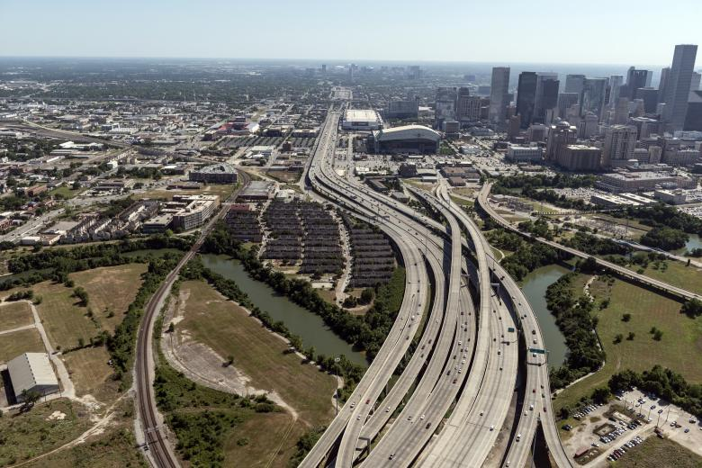

How the Construction of Interstates in the U.S. has Divided Cities and Progressed Redlining and Racial Segrigation
All across the United States, cities are still facing effects brought by interstate construction in the late 1950s. This map allows you to interact with Popular U.S. Cities and view before and after aerial images of their downtown areas and the changes. In addition, the redlining maps created around the time of urban sprawl are included.

A legend that you could find on "Residential Security Maps", published in 1937